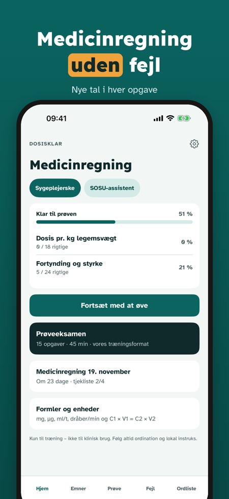
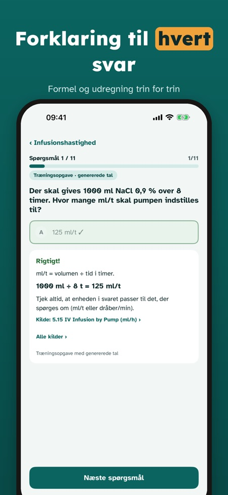
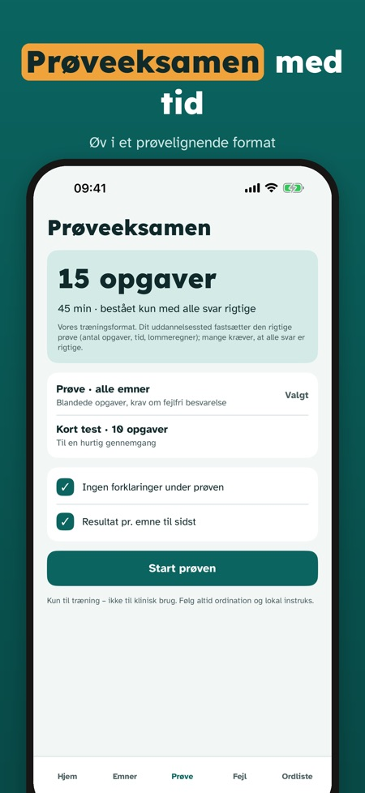

Dosisklar hjælper sygeplejestuderende med at øve medicinregning til prøven, med nye tal i hver opgave og løsningen trin for trin. Kun til eksamenstræning.



Sygeplejestuderende, der vil øve medicinregning til prøven.
Nej. Dosisklar er kun til eksamenstræning og må ikke bruges til at beregne doser til patienter.
Nej, hver opgave har nye tal, og løsningen vises trin for trin.
Spørgsmål pr. emne med forklaring, enheder, infusion og fortynding samt en prøveeksamen med tid.
Ja, den virker uden internet.
20 spørgsmål, én fuld prøveeksamen, ordlisten og tjeklisten.
Nej. Den fulde version er et engangskøb, der låser alle spørgsmål, prøveeksamener og statistik op. Intet abonnement.
Nej, appen er uafhængig og ikke tilknyttet uddannelsesstederne.
Dosisklar hjælper sygeplejestuderende med at øve medicinregning til prøven – med nye tal i hver opgave og løsningen trin for trin.
Du kan øve 20 spørgsmål, tage én fuld prøveeksamen og bruge ordlisten og tjeklisten uden køb. Den fulde version er et engangskøb, der låser alle spørgsmål, prøveeksamener og statistik op. Intet abonnement.
Dosisklar er kun til eksamenstræning og må ikke bruges til at beregne doser til patienter. Appen er uafhængig og ikke tilknyttet uddannelsesstederne.